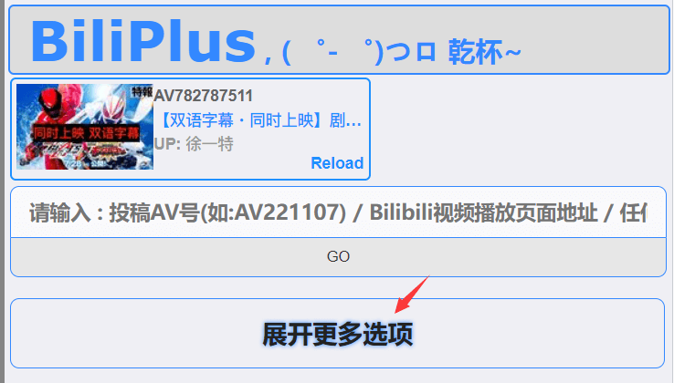
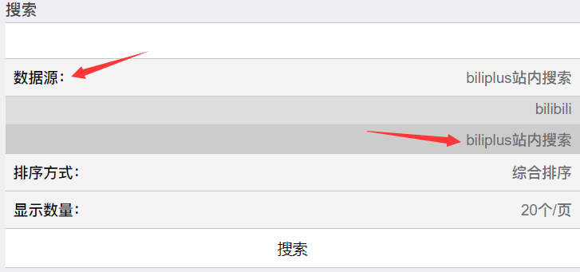
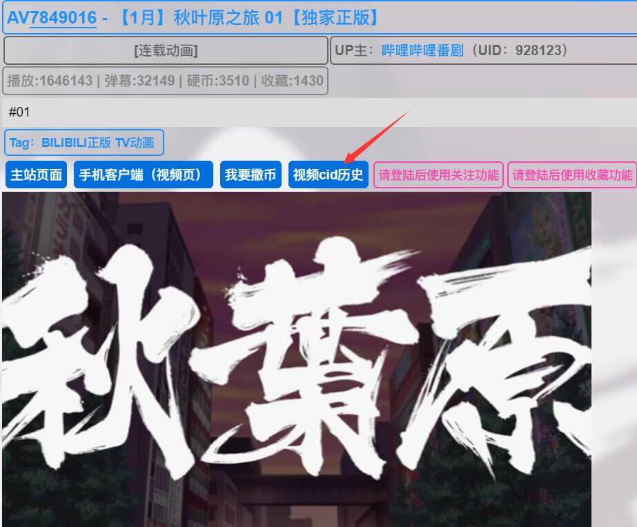
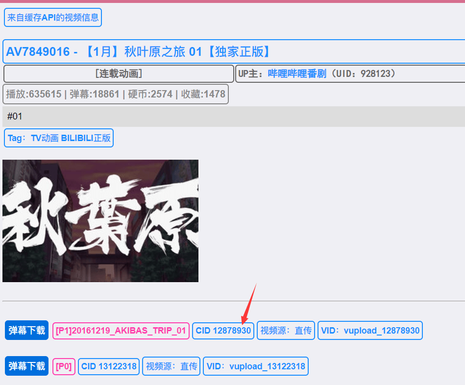

danmu
2023-04-30
2023-04-30
起因
之前我写过一篇关于找到B站下架视频历史弹幕的文章,里面有两个途径去获取历史弹幕
然而这两个方式本质上都是大家自己上传保存,一旦遇到冷门的番剧就会发现查无此弹幕
最全的弹幕库还是B站自己的数据库,所以这次我们直接通过番名去B的数据库下载弹幕文件
历史弹幕
获取CID号
这个平台以前可以直接下载弹幕现在已经不支持了,不过没关系我们可以自己下载.打开网站后
1.点击展开更多选项 -> 数据源 -> biliplus站内搜索


接下来就可以关键词搜索了,可以用条件限制以缩小范围,如输入’秋叶原之旅 @连载动画’结果将只包含连载动画分区的视频
需要注意一部分较早或非官方的投稿并不在对应的分区中检索时不应该限制分区.
下面给出了一部分常用的分区名,具体参见文档
- 连载动画
- 完结动画
- 日本电影
- 国产剧
- 海外剧
此外如输入秋叶原之旅 @m=928123,结果将只包含哔哩哔哩番剧投稿的视频
其中928123为哔哩哔哩番剧的mid号,可以在其个人空间的链接中找到
下表给出了一部分官方账号的mid
| 官方账号 | mid |
|---|---|
| 哔哩哔哩番剧 | 928123 |
| 哔哩哔哩番剧出差 | 11783021 |
| 哔哩哔哩电影 | 15773384 |
| 迷影社 | 4856007 |
2.搜索后可以得到我们想要的AV号
3.其实有av号就可以用现有的接口转成cid了,不过biliplus有提供该功能
有兴趣可以去看大佬搜集的api文档
点击打开 -> 视频cid历史


下载弹幕并转换
方法一
大佬提供的根据AV号或者cid的在线获取合并工具
方法二
- 注: 以下接口可能会因为B站更新而失效,可以去api文档替换
cid号粘贴到该链接最后并访问下载,segment_index=1为0-6分钟的弹幕,需要根据视频时长不断递增才能得到完整弹幕
1 | https://api.bilibili.com/x/v2/dm/web/seg.so?type=1&segment_index=1&oid= |
下载后可以看到是个seg.so文件,我们可以直接用现成的在线转换
也可以自己写一个解析代码去转换,有兴趣可以看看这个文档
将seg.so转换成ass格式
将ass格式转换成xml格式
至此我们的弹幕文件就下好了